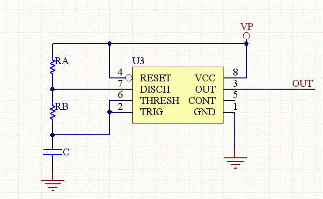

NE555 Astable Multivibrator Frequency and Duty Cycle Calculator
This calculator computes the resistors and capacitors for a NE555 timer chip, which has been configured as a astable multivibrator (oscillator), or square wave generator. Just enter in the duty cycle and the frequency and the calculator will compute reasonable values for the resistors and capacitors.
Note that the minimum duty cycle is 50 percent, so if you need a smaller duty cycle you need to use an inverter on the output.
Also the design equations of the timer are just approximations that can be off by as much as 20% from the empirical results.
Equations:
F=1/T= 1.44/((RA+RB*2)*C)
TL= 0.693*RB*C
TH= 0.693*(RA+RB)*C
D= Duty Cycle= (RA+RB)/(RA+2*RB)
Or,
RA= 1.44**(2*D-1)/(F*C)
RB= 1.44*(1-D)/(F*C)

NE555 Circuit Schematic